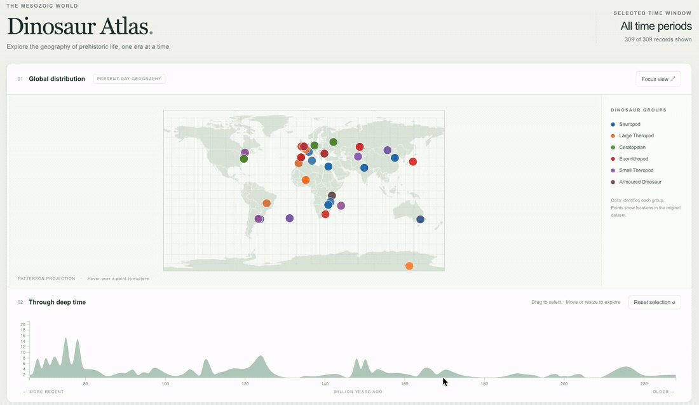

Interactive Map of Dinosaur Records
Exploring 309 dinosaur records on a world map linked to a geological timeline.

Overview
This visualization brings together location and geological time for 309 dinosaur records. A linked world map and timeline let users select a period and see which records fall within it, making geographic patterns easier to compare across periods.
Approach
- Mapped geographic coordinates for 309 dinosaur records in linked D3.js world-map and timeline views.
- Implemented a draggable time selector to explore geographic distributions across geological periods.
- Used color to distinguish dinosaur types and animated map updates across locations and time.
Implementation
D3.js connects the draggable time selector to the map markers. Moving or resizing the selection updates the records shown, with colors distinguishing dinosaur groups and animated transitions helping users follow the changes. Locations come from the supplied dataset and are plotted on present-day continents.
Reflections
Keeping the map and timeline in one view allows users to compare records across periods without moving between charts. The map shows recorded locations rather than a reconstruction of prehistoric continents.